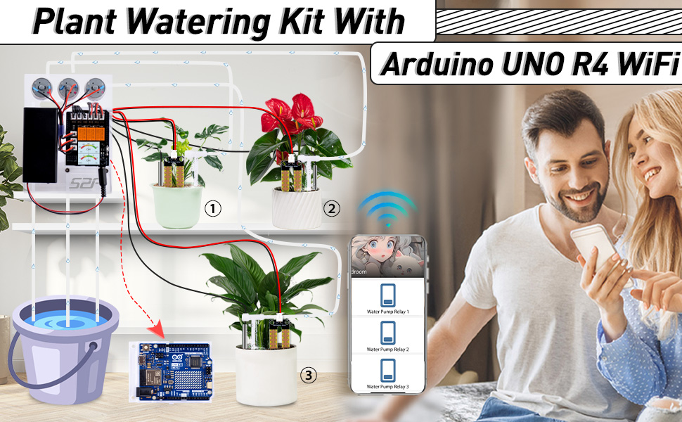
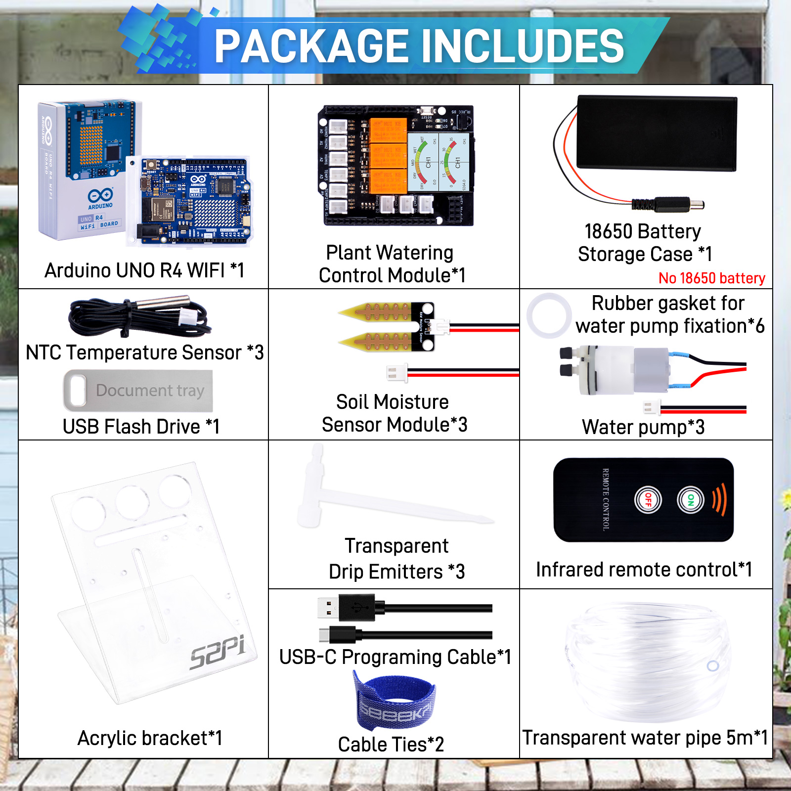
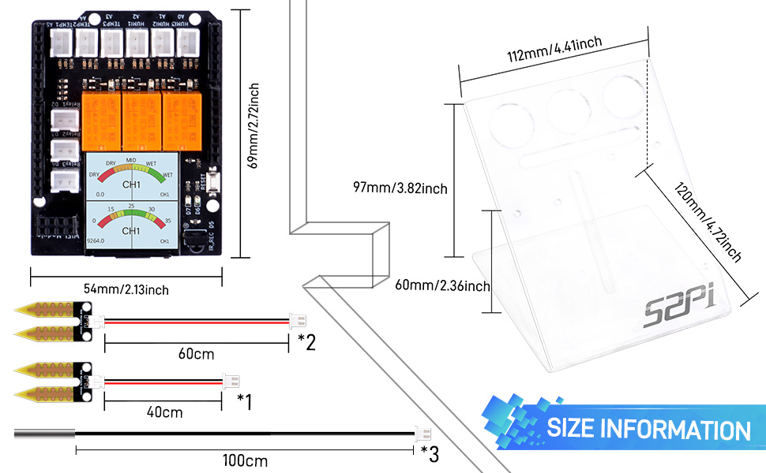

What components are in the kit?
- Product Name: Plant Watering Kit with Arduino UNO R4 WiFi
- SKU: KZ-0069

Plant Watering Kit with Arduino UNO R4 WiFi Manual
Introduction
Welcome to the Arduino UNO R4 WiFi Shield Kit! This kit is designed to provide a comprehensive solution for environmental monitoring and control with the integration of soil moisture sensors, NTC temperature sensors, relay modules, and water pumps, all managed through a 1.3-inch IPS RGB TFT screen. This manual will guide you through the setup process, from preparing the Arduino IDE to configuring the hardware and software components.
Compatibility
| Arduino Product Name | Compatibility | TFT Screen Support | WiFi Support |
|---|---|---|---|
| Arduino UNO R4 WiFi | YES | YES | YES |
| Arduino UNO R4 Minima | YES | YES | Need ESP01S module |
| Arduino UNO R3 | YES | NO | Need ESP01S module |
| Arduino Leonardo | YES | YES | Need ESP01S module |
| Arduino Due | YES | YES | Need ESP01S module |
| Arduino YUN | YES | YES | YES |
| Arduino Mega 2560 | YES | NO | Need ESP01S module |
| Arduino UNO | YES | NO | Need ESP01S module |
| Arduino NANO | NO | NO | NO |
| Arduino MINI Pro | NO | NO | NO |
| Arduino UNO Mini Limited Edition | YES | NO | YES |
| Arduino Zero | YES | YES | YES |
| Arduino UNO WiFi Rev2 | YES | YES | YES |
Package Includes

Dimension

Tech Support
- If you have any question on how to assmeble it, please kindly send email to us by click here: Tech Support
- or send E-mail to : tech@52pi.net